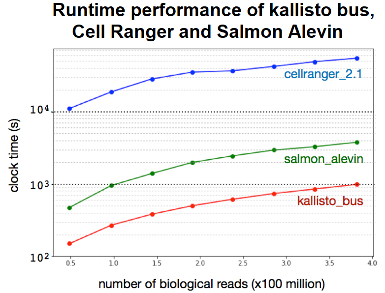
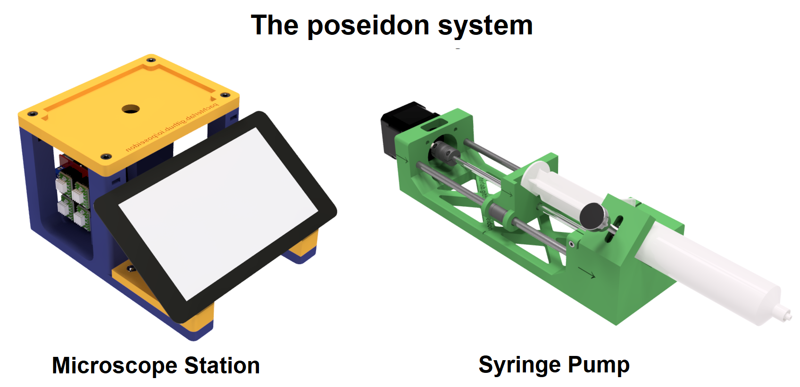
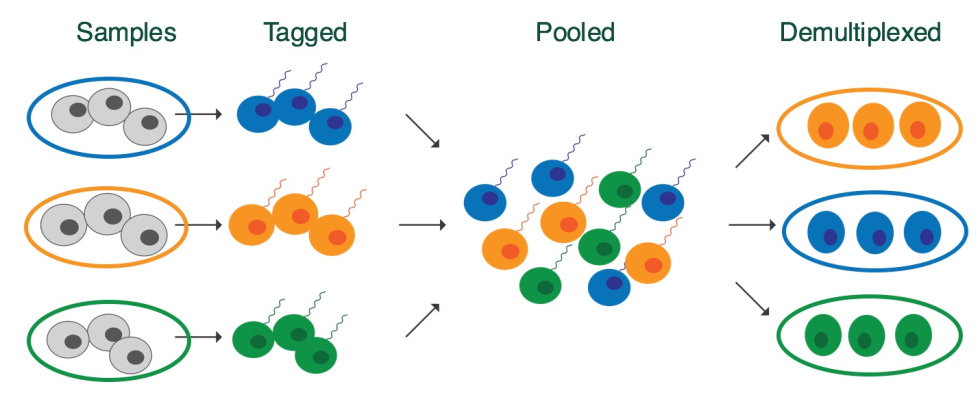

Research highlights
Single cell data preprocessing

The analysis of single-cell RNA-Seq data involves a series of steps that include: (1) pre-processing of reads to associate them with their cells of origin, (2) possible collapsing of reads according to unique molecular identifiers (UMIs), (3) generation of feature counts from the reads to generate a feature-cell matrix and (4) analysis of the matrix to compare and contrast cells.
Some of these challenges are procedurally straightforward but computationally demanding. Others are are statistical in nature and require technology specific models. We have recently introduced a format for single-cell RNA-seq data called the BUS (Barcode, UMI, Set) format that facilitates the development of modular workflows to address the complexities of these challenges. It is described in The Barcode, UMI, Set format and BUStools (Bioinformatics 2019).
BUS files can be generated from single-cell RNA-seq data produced with any technology and can, in principle, be produced by any pseudoalignment software. We have implemented a command in kallisto v0.45.0 called bus that allows for the efficient generation of BUS format from any single-cell RNA-seq technology. Tools for manipulating BUS files are provided as part of the bustools package. Finally, R and python notebooks for processing and analyzing BUS files simplify and facilitate the process of developing and optimizing analysis workflows.
Open source hardware for bioinstrumentation

We are interested in the development of open source hardware with a focus on instruments used in the wetlab.
Our first open source hardware project is the poseidon syringe pump and microscope system , an alternative to commercial systems that costs less than $400 and can be assembled in an hour. It uses 3D printed parts and common components that can be easily purchased either from Amazon or other retailers. The microscope and pumps can be used together in microfluidics experiments, or independently for other applications. The pumps and microscope can be run from a computer or Raspberry Pi with an easy to use GUI.
As we developed the poseidon system, our goal was not only to make a good piece of hardware, but also to have a system that would be easy for other people to build and contribute to. Code, files and documentation were made available on GitHub throughout development, and we were happy to see that people discovered and contributed to the project even before it was posted on bioRxiv! The guidelines we developed, together with a brief story of the project are described in the blog post Open sourcing bioinstruments.
Single cell experimental methods

Together with computation methods, we are interested in the development of new experimental methods for single cell RNA-seq.
Our first experimental protocol enables universal sample multiplexing method for single-cell RNA-seq in which methanol fixed cells are chemically labeled with identifying DNA tags. The tagging mechanism uses a click chemistry one-pot, two-step reaction. The complete method, together with the demonstration of a 96-plex perturbation experiment, is described in the 2018 bioRxiv preprint Highly Multiplexed Single-Cell RNA-seq for Defining Cell Population and Transcriptional Spaces.
A quick overview of the method and generated data is described in the blog post The benefits of multiplexing.